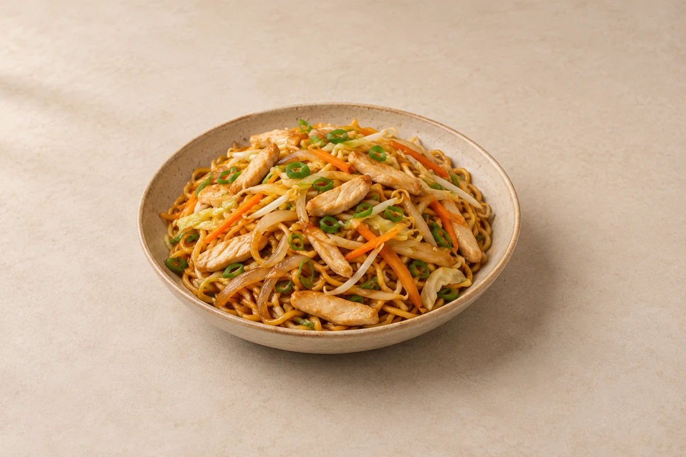

Fakeaway
Chicken Chow Mein
Tender chicken breast, golden noodles and crunchy vegetables in a savoury takeaway-style sauce. Serves 2.
Prep15 mins
Cook15 mins
people
Ingredient quantities update automatically

Ingredients
Noodles and stir-fry
Chicken marinade
Sauce
Method
Marinate the chicken
Mix the sliced chicken breast with the marinade ingredients. Leave for 10 minutes while preparing everything else.Prepare the noodles and sauce
Cook the noodles for about 1 minute less than the packet instructions. Drain, rinse briefly under cold water and drain thoroughly. Mix the sauce ingredients in a small bowl.Cook the chicken
Heat two-thirds of the stir-fry vegetable oil in a large wok over a high heat. Stir-fry the chicken for 4–5 minutes until cooked through. Transfer to a plate.Stir-fry the vegetables
Add the remaining stir-fry oil. Add the onion, carrot and cabbage and stir-fry for 2–3 minutes. Add the garlic and cook for 30 seconds.Fry the noodles
Add the well-drained noodles and spread around the wok. Leave for 30–60 seconds, then toss and fry for another minute.Bring together
Return the chicken and add the sauce, beansprouts and spring onions. Toss over a high heat for 2–3 minutes until everything is piping hot and the beansprouts are cooked but retain some crunch. If your pan is small, cook in batches so the noodles fry rather than steam.